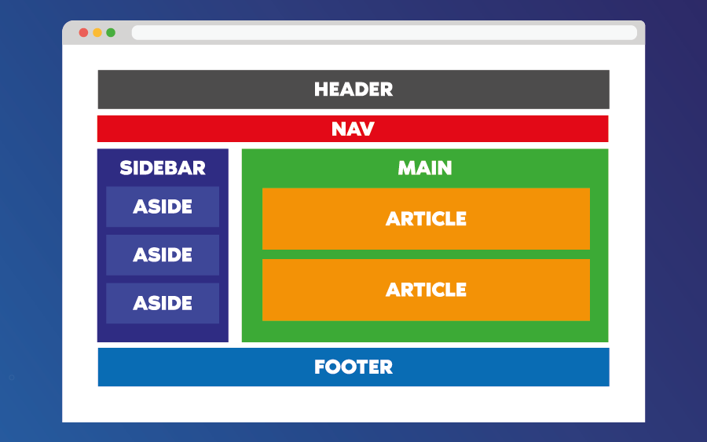

MOŻLIWOŚCI
Język HTML jest podstawą strony internetowej. To w nim zapisane jest, co ma się na niej znajdować. Nadaje znaczenie semantyczne poszczególnym fragmentom tekstu poprzez formowanie hiperłącz, akapitów, nagłówków, listów, a także osadza w tekście dokumentu obiekty plikowe, na przykład multimedia, lub interaktywne formularze. Pozwala na określenie wyglądu dokumentu w przeglądarce internetowej. Często towarzyszą mu technologie takie jak kaskadowe arkusze stylów (CSS) oraz języki skryptowe, najczęściej JavaScript.

SEMANTYCZNOŚĆ
Język HTML to język semantyczny, czyli jest on zaprojektowany tak, by każdy znacznik niósł za sobą jakieś znaczenie. Semantyka jest jedną z podstawowych zasad dobrego SEO (ang. search engine optimization). Korzystanie prawidłowo z np. znaczników nagłówkowych (h1, h2...) ma korzystny wpływ na pozycjonowanie strony w wyszukiwarkach. Wpływa ona także na prostotę w zrozumieniu kodu - gdy wszystko jest uporządkowane, innym osobom znacznie łatwiej się w nim odnaleźć.
HISTORIA
Twórcą języka HTML jest fizyk Tim Berners-Lee. Jego pierwsza wersja została opracowana w 1989 roku. W 1999 roku standardem stał się HTML 4.01, gdyż był on najbardziej używaną wersją powstałą podczas tych 10 lat. Rok później standardem został język XHTML, będący połączeniem języków XML i HTML. Ze względu na połączenie z XML, był to język bardzo restrykcyjny. W 2004 roku rozpoczęły się prace nad HTML5, który został ukończony i stał się standardem 2014 roku.